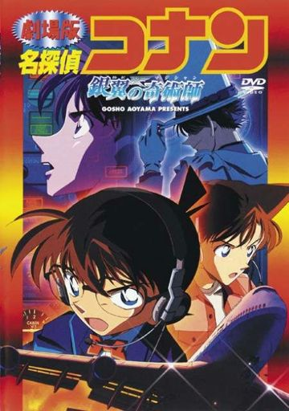
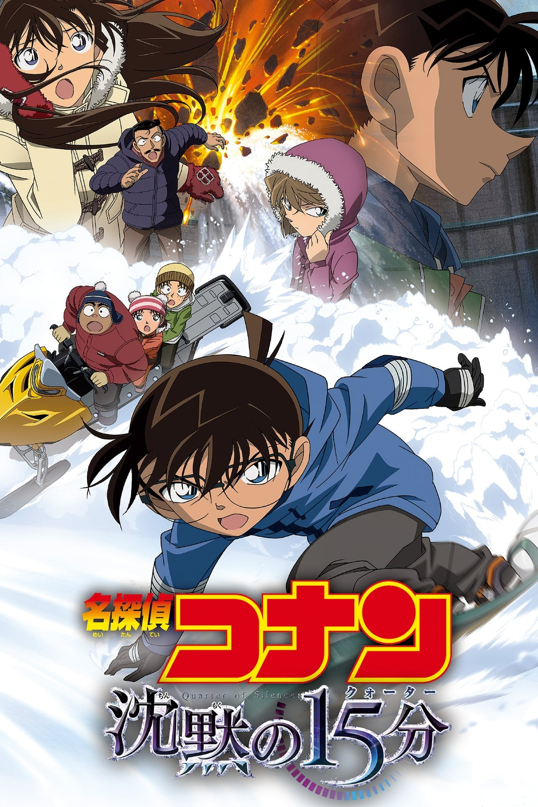

El Ultimo Mago del Siglo
Conan y su amigo Heiji intentan proteger de las manos
de Kaito Kid el último tesoro de la Dinastía rusa de los
Romanov, los Huevos Imperiales de Pascua. Kid consigue
robar el "Huevo de la Memoria" pero una misteriosa persona
interrumpe su huida, le persigue y consigue derribarlo y
robarle la preciada joya.

El Mago del Cielo Plateado
Una famosa actriz pide ayuda a Kogoro Mouri para atrapar a Kaito
Kid, ya que ha recibido una carta advirtiéndole que robaría la
joya del destino. La aventura transcurrirá en un vuelo de Tokio
a Hakodate, en el cual matarán a la actriz por envenenamiento.

15 Minutos de Silencio
Una nota de amenaza llega al gobernador Yuuichiro Asakura, el día
anterior a la apertura de la línea Touto. El mismo día del viaje
inaugural del tren subterráneo, Conan consigue frustrar el plan,
pero pronto descubrirá que eso era un aviso y que en realidad los
planes que tiene son mucho peores.
Los Girasoles del Fuego Infernal
Los más importantes inversores y multimillonarios del mundo se
reúnen en Nueva York para una gran subasta. Se trata de la famosa
obra de Van Gogh "Los Girasoles" la cual se daba por desaparecida
en Japón. Jirokichi Suzuki se hace con la obra y su objetivo será
coleccionar las 7 pinturas de "Los Girasoles".